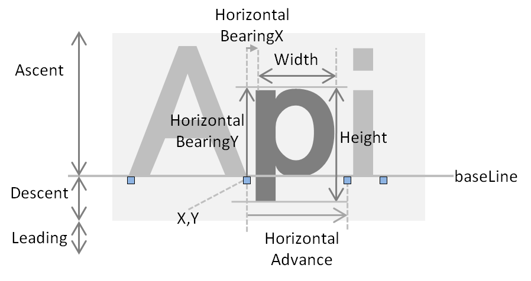

Sce.PlayStation.Core.Imaging provides a feature related to image processing. Image files can be loaded and characters can be rendered within images.
Contents
Image class represents images. An Image can be created from a PNG, JPG, BMP or GIF image file (however, animated GIFs are not supported), as well as from a single-colored image with the color and size specified.
Methods such as Image.Resize() and Image.Crop() are provided to convert images. Methods such as Image.DrawText() and Image.DrawImage() are provided to paste texts or other images within images.
To create a Texture from an Image, use Image.ToBuffer() and obtain the memory image of the image; pass this to Texture2D.SetPixels().
Characters can be rendered within an image by calling Image.DrawText(). Pass the Font object to Image.DrawText() and specify the font to use in rendering the characters.
The following two methods are available for font usage.
To use a standard PSM font, specify FontAlias.System to the Font constructor when creating a Font class instance. Currently, only FontAlias.System is provided as a system font.
Example: new Font(FontAlias.System, size, FontStyle.Regular),
To specify a font to use, perform the following procedure.
Font.GetTextWidth() is a method for obtaining the width of the image required to render characters. This method is used to determine the size of the image according to the length of the character string.
In addition, Font.GetTextMetrics() is a method for obtaining metrics information (measurement information) per character. This is used to obtain the width and height of each character.
Figure 1 Character metrics information (measurement information)
For details, Sce.PlayStation.Core.Imaging.CharMetrics 、 Sce.PlayStation.Core.Imaging.FontMetrics see: